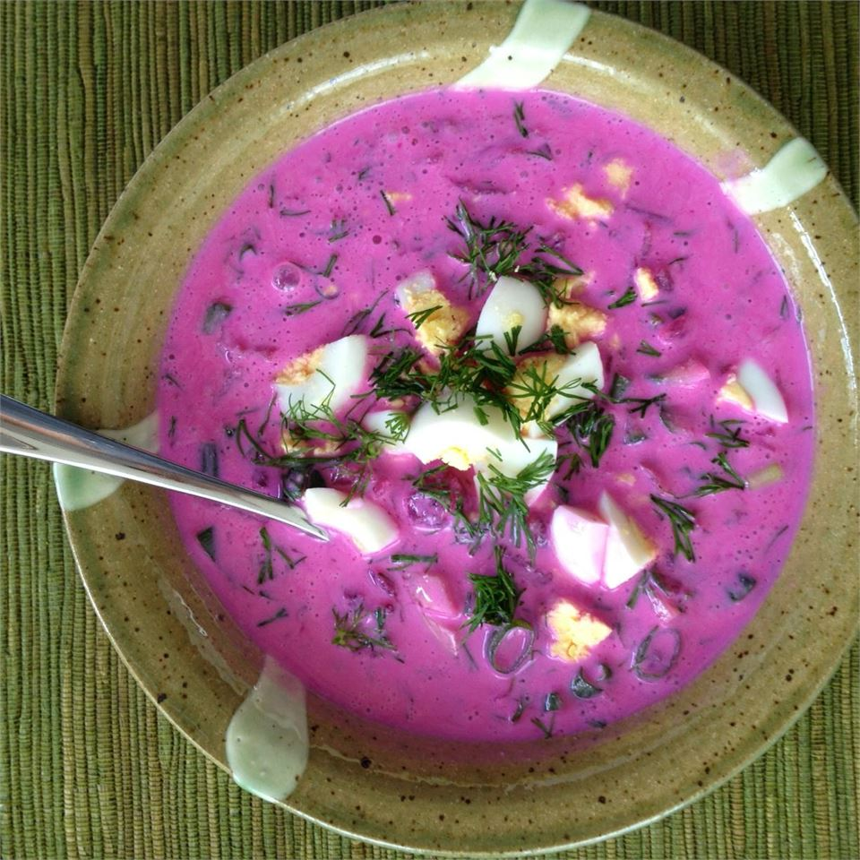

Cold Beetroot Soup

Description
In the sultry summer days that followed each other without respite this
year, most cooks tried to avoid spending too much time at a hot stove.
There is one dish that will always save the day, even the hottest—cold
soup.
Cold soup is made from kefir, or curdled milk, with cooked beetroot,
chopped radish, fresh cucumber, boiled eggs, and various herbs. The
taste should be a balance between sour, sweet, and salt. This dish is a
summer classic in all Baltic kitchens. It is very easy to prepare and
a perfect lunch option on a hot summer day.
Ingredients
- 4 eggs
- 1 quart buttermilk
- 1 pound beets, peeled and shredded
- 1 large English cucumber - peeled, quartered, and sliced
- ¼ cup minced chives
- 1 bunch fresh dill, minced
Steps
-
Place the eggs into a saucepan in a single layer and cover the eggs with
water by 1 inch. Cover the saucepan and bring the water to a boil.
Remove from the heat and let the eggs stand in the hot water for 15
minutes; drain. Cool the eggs under cold running water in the sink.
Peel and chop the eggs.
-
Pour the buttermilk into a large bowl; add the eggs, beets, cucumber,
chives, and dill. Stir gently to combine. Chill in refrigerator for 1
full day before serving.